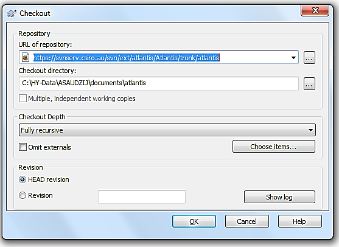
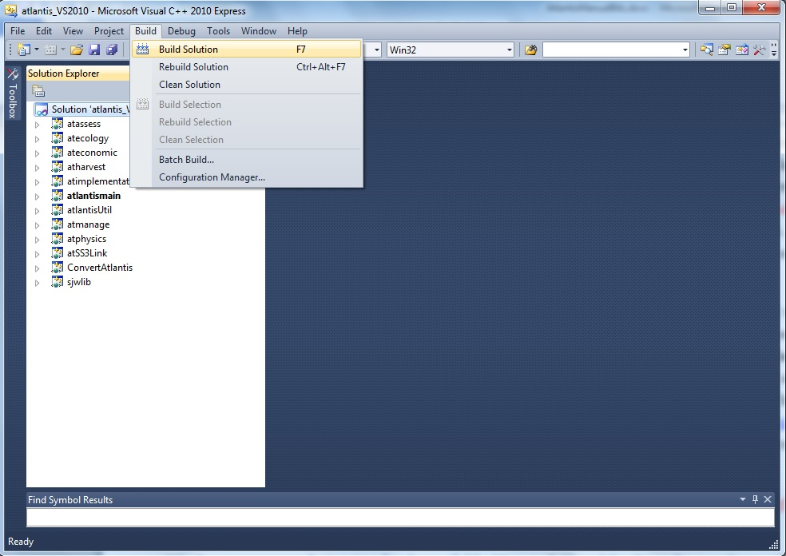
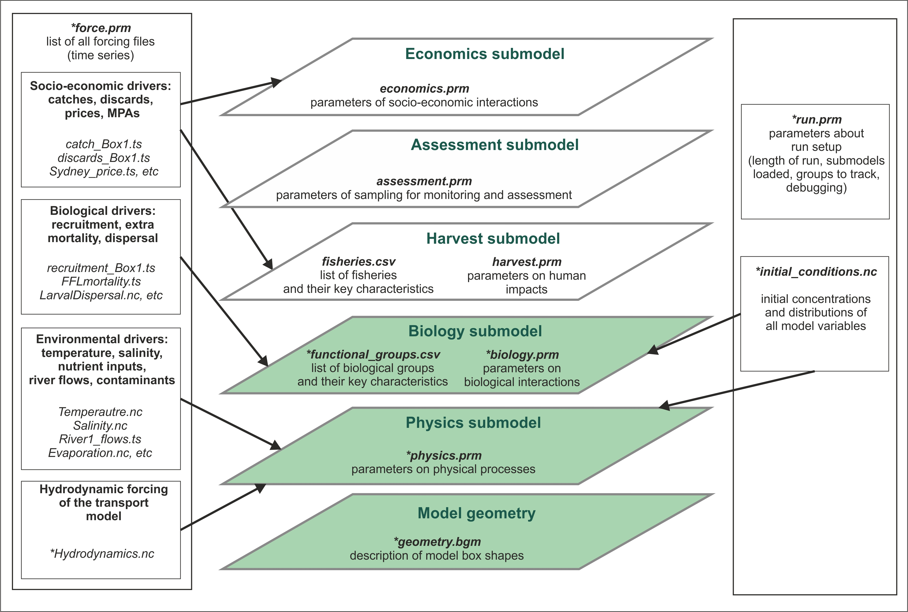
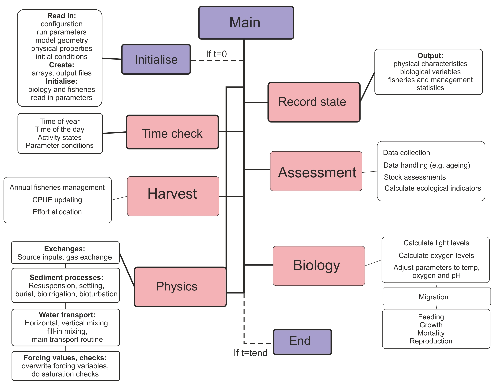
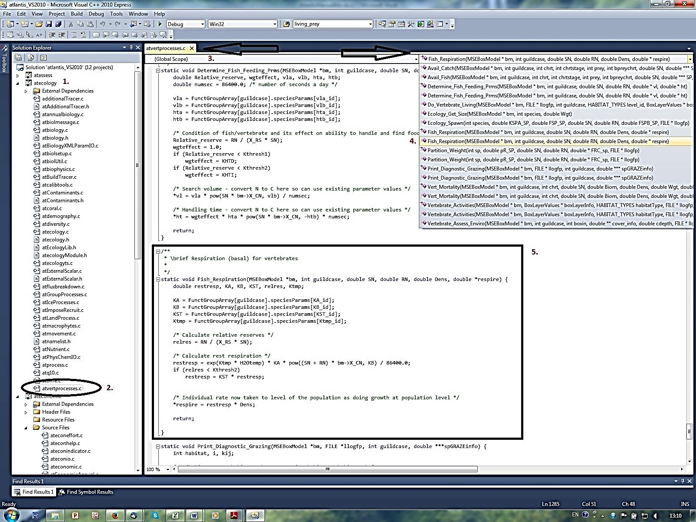
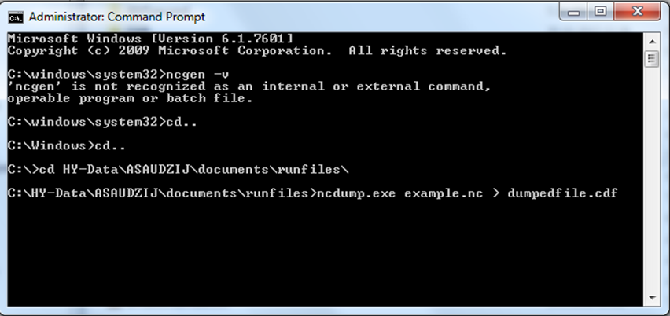
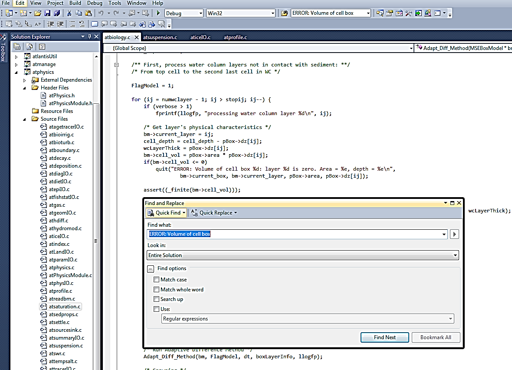

2. INSTALLATION AND RUNNING
2.1 How to check out and install the code
AR note: as of 2025 this section is no longer current as we moved to GitHub. Update ASAP.
Atlantis is dynamic and new modifications are introduced almost every month. In addition, Atlantis can run on Windows, Mac and Linux (Unix) operating systems. Therefore, you cannot download one executable, but have to check out and compile the code yourself. This ensures that you have the latest version of the code (and please remember to update it regularly!) with all associated libraries required to run Atlantis. As new functionality is added to Atlantis, sometimes code updates also means that new parameters must be added to the parameter files. While this can be frustrating, it is still highly recommended to update the code at least once a month, as updates also include bug fixes. To keep informed on new parameters the users are advised to subscribe to Atlantis wiki blog posts. In addition, if you need help from the model developers you are much more likely to get help quickly if they don’t have to update your model first!
Atlantis source code is hosted in a subversion (abbreviated as SVN) repository. SVN is a commonly used version control system that is used to manage the collections of files that are changed over time. It keeps a history of the code base and the changes that have been made to it, so developers can recall past code versions for reproducibility. It also allows several people to work on the code simultaneously and merge it back together. As a normal user you will have read-only access to the Atlantis code repository.
If you want to modify the code, please check out wiki for instructions on how to create a new branch from your working copy or merge your modifications with new updates. The Atlantis wiki also has more information on modifying the code, such as creating and adding a new input parameter or adding a new type of functional groups.
To check out the code and install the code on your computer follow these steps:
1. Get access to Atlantis SVN repository by joining the Atlantis Wiki, signing the user licence agreement and requesting access to the SVN repository. The response time on this should not take more than a couple of days (if it does poke Beth again as she is likely on the road and has not seen the email).
2. Check out the code from SVN to your computer. Experienced users can check out the code by using svn commands through a command line terminal (dos or terminal window). Alternatively, you can use special software to make things easier.
Windows users can use the free package TortoiseSVN, which works like a plugin for Windows Explorer. To check out the code with TortoiseSVN first install it on your computer. Next, create a new folder where you will keep the code, e.g. C:/AtlantisCode. Rick-click the mouse on this folder and chose “SVN Checkout…” option. This will bring up the TortoiseSVN menu:

Enter the URL of the code depository, provided on the Atlantis Wiki source code page, making sure the directory to install the code on your computer is correct, and chose “Fully recursive” Checkout Depth and “HEAD revision”. Detailed instructions on how to check out the code with TortoiseSVN are available on the wiki (here).
Mac users can check out the code using the app Versions, while Linux users can use RedBean.
When updating the code, make sure you always update to your main directory where all your code is located, such as C:/AtlantisCode, rather than any subfolders within it. This will ensure that libraries are updated properly.
3. Install software for compiling the code. Compiling Atlantis code in Windows and Linux operating systems is easy. It is a lot harder to set up on Mac operating systems (although once installed everything runs smoothly enough).
Windows users can build the code using freely available Microsoft Visual Studio software. Currently supported versions are 2005/2008/2010/2012 and, as of March 2016, you can download 2010 and 2012 Visual Studio installers from the Atlantis wiki by clicking on the paperclip sign on the wiki.
Instructions for software and building Atlantis under Linux and other platforms are available on the wiki. If you are a Mac user you may find the use of comfort food at this stage a good idea, each Mac installation appears to face its own challenges, sometimes it goes very easily other times you can spend a day or more wrestling to get one of the supporting libraries to work with your architecture. There does not seem to be any rhyme or reason to this! Macs are just special that way.
4. Install the NetCDF 4 libraries. These libraries are required for running Atlantis. Detailed instructions on installing NetCDF and updating the path are available on the wiki. It is very important that you do this properly, as Atlantis will not run otherwise. Windows users can download pre-compiled libraries, Mac and Linux users will need to down load the source and compile locally.
5. Compile the code. In Windows compiling the code does not require any programming skills. All you need to do is double-click the Visual Studio SLN file (chose the version suitable for your Visual Studio, e.g. Atlantis_VS2010.sln) located in the main directory of where you checked out the code (e.g. C:\programs\Atlantis). This will load the project into Visual Studio. Then go to the Visual Studio Build menu and chose “Build Solution”. Detailed instructions are given on Atlantis Wiki building page.

Once the build has successfully completed you will find the latest executable atlantismain.exe in C:\...\Atlantis\atlantismain\Debug folder (where … indicates your designated directory for the code)
You will need to recompile or build the code anew every time you update it from the SVN repository.
On Linux (and Mac) platforms GCC is recommended for compiling the code. Other options for compiling are also available for users who for any reason do not want to use Microsoft Visual Studio or GCC. These options include the Intel compiler and Cygwin. However, these are not recommended compilers and users will potentially have to work out solutions to issues themselves.
6. Create a directory for your simulations.
This is where you will keep all your parameters and run outputs. This could be called C:\AtlantisRuns\... This is NOT the same directory as the code itself, so please make sure you understand the difference. If you use several models, such as California, SE Australia and Antarctica, might want to keep parameter files of each model in separate directories, e.g. C:\AtlantisRuns\California\, C:\AtlantisRuns\SE_Australia\ and so on.
Please make sure not to use spaces in the name of the directory (e.g. use C:\AtlantisRuns or C:\Atlantis_Runs not C:\Atlantis Runs as the core code of Atlantis was written before spaces were allowed in directory names and it may not correctly read file names if the directory structure includes spaces1).
The South East Tasmanian (SETas) model is freely available from the Atlantis SVN repository as a learning tool. It is a simple model with only a few boxes and few functional groups. All required input and parameter files for SETas model can be downloaded from the wiki and used as templates for new model applications.
Make sure you use SVN checkout to download these files. Don’t use the web browser to copy the files. Also make sure you download files for the correct version of the Atlantis code (trunk or bec_dev).
7. Check out or copy files of your specific model and latest Atlantis executable into the run directory.
Also copy the latest executable atlantismain.exe from the C:\...\Atlantis\atlantismain\Debug folder into the run directory you created before (e.g. C:\AtlantisRuns).
The executable must be in the same directory as the main BAT run file, required to initialise your runs
Make sure you copy the new executable file from …Atlantis\atlantismain\Debug into your run directory every time you update and recompile the code. Forgetting to do this is one of the more common mistakes.
Alternatively, you can insert a line into the start of your BAT file to copy it before the start of each run if you want to make sure you always have the latest version.
This would look like:
copy C:\...your Code directory \atlantismain\Debug\atlantismain.exe
The dot at the end of the line means that the file atlantismain.exe from Debug directory will be copied to the same directory as the BAT file.
See the wiki for details.
A good practice Atlantis run directory is uncluttered and contains separate folders for:
1) external forcing files or inputs. These files are referred to in force.prm file and will rarely need to be modified after the parameterisation of the model. They are usually placed in the ‘inputs’ directory
2) other parameter files. These parameters will be listed in the .bat file used to initialise simulations. Depending on the research question, you will probably modify at least some of the biological, harvest or socio-economic parameters in each of the simulations. Although it is not obligatory we suggest that you keep all your parameters in a separate ‘parameters’ directory.
It is a good idea to give parameter files meaningful names. For example, it would be hard to remember what A.prm refers to, whereas Biol_noclimate_change.prm is a lot more informative. However, there is a limit to the length of a filename Atlantis will read-in so if your model won’t run because it can’t find a file and that file does exist but has a long name try shortening the name and see if that helps.
2.2. Input files
Atlantis input files come in six file formats:
- BGM file defining model geometry (see chapter 3)
- NC initial conditions and forcing files (see chapter 2.8)
- CSV files defining biological and fisheries groups (see chapter 6)
- PRM files listing flags to activate optional calculations and parameters values (described in detail in subsequent chapters)
- TS files defining time series of external forcing drivers (see chapter 8)
- BAT file used to initiate the run (see chapter 2.5)
All files except for NC files can be opened and edited using any basic text editing software (such as TextPad or NotePad). Until recently this was the usual way to setup and modify model parameters. However, some PRM files are thousands of lines long, which means that hand editing can be tedious and a source of error. New R-based tools are currently under development to help users visualise and modify parameter files in a more streamlined way (see below)
PC, Mac and Unix computers use different syntax to indicate line end. This means that should you receive files from someone using a different operating system, the PRM files will have to be converted to match your local operating system. In Linux this can be done using the ‘flip’ software. If you only have a few files this can be done by simply opening the parameter files in a text editor (e.g. TextPad in Windows or TextWrangler in Mac) and saving them in a format suitable for your operating system (see menu “File Format”). More info on line terminators can be found on the wiki here or by searching in your favourite search engine.
2.3. Overview of Atlantis submodels and the main() routine
Detailed descriptions of Atlantis submodels and specific input files are provided in subsequent chapters. For a start you need to understand which of the files are required to set up a simple simulations and what they mean (Error! Reference source not found.). The figure below gives a schematic of the Atlantis submodels overlaid one over another. At the very basis there is the model geometry, Physics and Biogeochemical (Biology and Ecology) submodels. The other, optional, submodels use their outputs to simulate the human domain.

Figure 2. Schematic representation of the Atlantis model structure and input files. Submodels coloured in green are obligatory. Files marked with * are required, others are optional.
The 3D structure of your model domain, or Model Geometry, is described in the BGM file. The model geometry is used to simulate all processes in the five submodels.
Physics and Biology submodels are required (although you can switch some parts off for debugging purposes), whereas Harvest, Assessment and Economics submodels are optional. Each submodel has a specific PRM file describing parameters used in it. Biology and Harvest submodels also require a list of the relevant groups, such as biological functional groups or list of fisheries, in the CSV format.
Initial conditions are the spatially explicit starting values for all modelled state variables (e.g. spatial distribution of numbers of age 1 cod at the start of your simulations). The initial conditions are specified in the initial condition NC file.
In addition, all simulations require two supporting files force.prm and run.prm (see below for a brief description of all parameter files).
The main() routine is in the atlantismain.c file in the atlantismain library. It calls in a set order all other routines that initialise and run the requested submodels and routines and write output files. Each submodel and their main routines will be described in detail below, but a general overview is given in Fig. 3.

Figure 3. Brief overview of the Atlantis main() routine that calls other routines implemented in various submodels.
2.4. Delving into the code: finding the files and routines that describe the processes you are interested in
This chapter aims to give a very brief introduction into the Atlantis code. You do not need to use the code to run simulations. However, if you can navigate around the code and find routines that use the parameters and execute the processes you are interested in, it will most helpful and informative. In the end, this is the best way to understand what exactly the model does.
Of course, reading the code will require at least some programming skills. Check out a number of C tutorials available online for basic understanding about programming and C. The internet is an ever changing place so the best idea is to use your favourite search engine to find some good c tutorials for someone with your level of coding experience. At time of writing the following were potentially helpful sites www.cprogramming.com and www.tutorialspoint.com/cprogramming and www.imada.sdu.dk/~svalle/courses/dm14-2005/mirror/c/
However, even without a background in c coding, two approaches might be useful in starting to navigate through the code.
The first is the Search tool. In Visual Studio (or GCC, or another package) go to Edit->Find and Replace->Quick Find, or simply click Ctrl+F. This will bring up the Search menu where you type in the search string, such as the name of parameter.
In the example below, we search for the include_atmosphere parameter, used in the physics.prm file. Make sure you search in the “Entire Solution” if you want to browse through the whole code. You can either scroll through the entire list of search results and click directly on the line of interest (if you have some familiarity with the code) or you can click “Find Next” (if you go this route you may need to click a few times to finally get to one of the routines that uses the parameter). For example for include_atmosphere the relevant routine is called Amonium_ROC(), which is indicated on the top right drop-down menu in Visual Studio, and it is located in the file atNutrient.c
Here we can see that if include_atmosphere flag is on (set to 1) the code will transfer NH3 values from the atmosphere into the surface cell.
The second approach is to simply browse the libraries, files and routines you might be interested in. Of course, to do this you will need to know the names of routines. This can be done by searching for relevant parameters as shown above or by looking in the drop down list of routine names (most GUIs for interrogating code have such a feature).
As an example we will look at the formulation of the respiration processes in fully age structured groups.
Once you open your solution file in Visual Studio C++, expand the submodel atecology (1.) and double click the atvertprocesses.c file (2.). The file will be opened (3.) and on the right side you have a drop-down menu to browse through the routines defined in the file (4.). By clicking on the Fish_Respiration()routine you will find the description of parameters and equations used to calculate it Note that the first reference to Fish_Respiration() in the drop-down menu has a small arrow next to it. By clicking on this option you will find where in the code the routine is called.
By exploring the code for the routine (5.) you can see that the routine needs variables calculated or defined elsewhere in the code, such as guildcase, SN, RN, Dens and *respire, these variables are described within the parentheses ( ) right after the routine name. The routine also uses six parameters – KA_id, KB_id, KST_id, Ktmp_id, Kthresh2 and X_CN. You can find them in the biological parameters file by replacing the ‘id’ with your functional group abbreviation (e.g. KA_FCD), as defined in the functional group .csv file. Sometimes the _id represents larger categories, such as _fish or _shark, as is the case for KST_fish, but you should be able to work it out by searching for the parameter name.

Now you only have to look through the equations and explore different parameter values in R or Excel, or on a piece of paper, and assess the shape of the response curve to different parameter values.
Another useful tool in exploring the code is the Call Hierarchy tool. It allows you to see the routines that call or are called from the routine of your interest. In Visual Studio this can be called by clicking the right mouse button while holding the pointer over the routine name and selecting “View Call Hierarchy” option. In the example below, we can see that routine Vertebrate_Activities() is called from Do_Vertebrate_Living() routine, and that many other routines are called from Vertebrate_Activities()
2.5. How to setup and start simulations
2.5.1. Crash introduction into Command line interfaces
Atlantis is an “old style” program that runs from a command line. This is done using "Command Prompt" on Windows or "Terminal" on a Mac or Linux. Please familiarize yourself with the command line interface and how to navigate among folders. For most uses you only need to know a few commands and can pick up the required skills in a few minutes. There are plenty of online tutorials to quickly learn about the Command line interface for your operating system (e.g. tutorial.djangogirls.org/en/intro_to_command_line/). Here are a few commands just to get you going (in fact you do not really need much more than that).
What to type: cd\ cd.. cd C:\AtlantisRuns cd C:\A + TAB key (type letter A and keep pressing TAB key) Press arrows up and down C: |
What this does: go to the root directory of the drive you are currently in go one directory level up go to the specified directory scroll through all folders within C: that start with A (case insensitive). This way you don’t need to type long folder names (and make spelling mistakes) go to the previously typed commands Go to drive C: from any other drive you are in |
| Note: In Mac and Linux use / instead of \ | |
2.5.2. Setting up the BAT file
At this stage you already have 1) compiled the code on your machine, 2) created a run directory for your simulations (C:\AtlantisRuns\MyModel), 3) copied all input and parameter files into the run directory, 4) copied the Atlantis executable (atlantismain.exe) from C:\...\atlantismain\Debug into your run directory.
The next step is to create a BAT file such as run.bat (or any name you want, e.g. NoFishing.bat) and then call it from the command prompt to initialise the simulations. The BAT file must be in the same directory as the Atlantis executable.
The easiest way to setup and modify the .bat file is in a text editor.
The BAT file initialising Atlantis simulation has one long command line calling the Atlantis executable and giving the names of the parameter files required for the run. For example in windows the command would look like: atlantismain.exe -i MySea_initial.nc 0 -o simulationOutput1.nc -r MySea_run.prm -p MySea_physics.prm -f MySea_force.prm -b MySea_biol.prm -m MySea_migrations.csv -s Functional_groups.csv -h MySea_harvest.prm -q MyFisheries.csv –a MySea_assess.prm –e MySea_econ.prm -d OutputFolder1 -t C:\AtlantisRuns\parameters Required parameters and files are shown in bold, optional parameters are in regular font. You will still have to make sure that correct paths of forcing files (for hydrodynamics, salinity, temperature and others) are given in the force.prm file. In the force.prm file the path of the inputs/ folder name often has to given as ../inputs/ which tells the program that the inputs/ folder is in the same higher level directory as the force.prm file. While the migrations.csv file is marked as optional here, it is usually used as most models include some form of migration into/out of the model. |
|---|
If the –t <name of folder containing parameter files> is omitted then Atlantis will expect to find the parameter files in the same directory as the batch file used to run the model. If the Atlantis executable is formally installed after it is compiled (e.g. using sudo make install in Linux or adding it to the Windows recognised path names, see the wiki) then you do not need to copy the executable file to the run directory and you only need to type the name of your Atlantis executable (e.g. atlantismain in the example) rather than name.exe in the command line.
Names of the parameter files must be given after an appropriate one letter argument which indicates what the following filename represents. For example, -i tells the executable that the following filename is the input file that details initial conditions. The actual names of the parameter files are flexible, as long as the file extensions are correct. For example, the initial conditions file could be named as initial_conditions.nc, start_of_the_run.nc, start_of_the_fun.nc, a.nc or fred.nc. It does not matter so long as it is an NC file. It is only the one letter flag command (e.g. -i, -o, -p and others) preceding the filename that tells Atlantis which kind of file to expect.
For example, your BAT file could look like the following and it will run perfectly well: BestModellingTool.exe -i BigBang.nc 0 -o TheLastSimulationEver.nc -r HowToRun.prm -p CleverPhysics.prm -f AllThoseInputs.prm -b EatEachOther.prm -s Critters.csv -m OurMovements.csv -h HowToCatchFish.prm -q Fishers.csv –a TryToAssess.prm –e MBAdomain.prm -d PutEverythingHere -t C:\AtlantisRuns\parameters |
|---|
Don’t forget to add number 0 after the name of the initial conditions file. This requirement is a legacy of the model development, and Atlantis will not run without it.
By default all simulation outputs will be placed in the same folder as the BAT file, but you can create an optional output folder (-d OutputFolderName). Specifying output folders is really important when running batch simulations (see below).
2.5.3. Parameter files called in the BAT command line
This section gives a brief description of the parameter files. They will be described in further details in subsequent chapters:
| -i | initial conditions of your model run, including physical water column properties, seabed properties and biomasses and size per group per box |
|---|---|
| -o | provides a name for the output files. Please make this an nc file (e.g. simulationOutput1.nc). Atlantis will create a lot of different outputs and will append titles of different output files to your specified name using the nc filename as the core of those names (e.g. simulationOutput1BiomInd.txt, simulationOuput1Catches.txt). |
| -r | parameters defining the run setup, such as which modules to turn on (fishery, socio-economics), time step (12 or 24hr), run and stop times, frequency of outputs, flags for debugging and verbosity, details of notes to store in log.txt |
| -p | physics parameters, such as resuspension, point-source scaling, eddy strengths and others. These parameters are not typically changed, although you may want to modify eddy strengths or turn off resuspension. |
| -f | forcing file provides pathways to all external (i.e. not simulated within the model) input files, such as hydrodynamics, salinity, temperature, nutrient input sources from river flows or upwelling, climate time series (precipitation, irradiance), historical catch, fuel prices, GDP and complex spatial zoning through time (the list of allowed external forcing files is given the chapter on force.prm below). These files are usually stored in your “inputs” folder. |
| -b | ecological parameters, including feeding preferences, distributions, mortality, reproduction and others |
| -m | migration parameters (used to be inside the biology.prm file) |
| -s | list of functional biological groups and their key characteristics, such as number of age groups |
| -h | parameters on fishing fleets, target species, catch history, discards, changes in selectivity over time, etc. Note that if you use external forcing of catch or fishing mortality, those forcing files must be specified in the force.prm file and not in the harvest.prm file |
| -a | sample design, sampling error structures and basic assessment model parameters |
| -e | socio-economics parameters for fleet dynamics, market model, trading model, and black-book based effort allocation model |
| -d | an optional destination folder. If provided, a new folder with this name will be created during the run and all outputs placed in this folder. Using this option is highly recommended |
| - t | an optional, but recommended folder, for storing input parameters (see Good Practice Tip 1). If this folder is not provided, all parameters (not inputs) must be in the same directory as the Atlantis bat file, if Atlantis has been formally installed to the command line, or in the same directory as the executable if you are simply copying the exe file to the run directory. |
Note, the forcing files (such as hydrodynamics, temperature, catch, recruitment and other forcing files) are not included in the BAT command line, because they are all listed in the force.prm file
Good practice tip 2 It is a good idea to give informative names to the parameter files. This way you can remember changes made in them. For example, Baltic_biol_CodMort05.prm could denote a biological parameter file with cod mortality set to 0.5. Also make sure you rename the parameter file if you modify it. This will help you keep track of which parameter combination was used for each simulation. It is strongly recommended that you keep a good record of all parameter modifications and outcomes they had on model simulations. We cannot stress this strongly enough! Almost every modeller has experienced difficult moments when trying to trace back what exactly was done at different steps of model development or scenario analyses. |
|---|
2.5.4. Setting up batch simulations
To set up batch simulations, simply add more command lines in your BAT file:
atlantismain.exe -i MySea_initial.nc 0 -o NoFishing.nc -r MySea_run.prm -p MySea_physics.prm -f MySea_force.prm -b MySea_biol.prm -s Functional_groups.csv -h MySea_harvestNoFishing.prm -q MyFisheries.csv -a MySea_assess.prm -e MySea_econ.prm -d OutputNoFishing -t C:\AtlantisRuns\parameters atlantismain.exe -i MySea_initial.nc 0 -o MedFishing.nc -r MySea_run.prm -p MySea_physics.prm -f MySea_force.prm -b MySea_biol.prm -s Functional_groups.csv -h MySea_harvestMedFishing.prm -q MyFisheries.csv –a MySea_assess.prm -e MySea_econ.prm -d OutputMedFishing -t C:\AtlantisRuns\parameters atlantismain.exe -i MySea_initial.nc 0 -o HighFishing.nc -r MySea_run.prm -p MySea_physics.prm -f MySea_force.prm -b MySea_biol.prm -s Functional_groups.csv -h MySea_harvesHighFishing.prm -q MyFisheries.csv -a MySea_assess.prm -e MySea_econ.prm -d OutputHighFishing -t C:\AtlantisRuns\parameters |
|---|
Batch simulations would normally have some differences between runs (shown in bold in the example above). Make sure you place each output in a different folder (-d) and don’t overwrite it! Also make sure you carefully check your command lines to ensure you call the correct parameter files. It is really disappointing to wait for a few days for your batch simulation outputs just to realise that the BAT file had wrong combinations of parameter files in it!
NOTE! If you run a lot of simulations it is good idea to keep your BAT files handy, so you can easily trace the parameter combinations used. The LOG file produced for each simulation includes the command line of the BAT file. However, some users find it convenient to add new commands to the BAT file and comment (deactivate) the old ones out with # sign. #atlantismain.exe -i MySea_initial.nc 0 -o NoFishing.nc -r MySea_run.prm -p MySea_physics.prm -f MySea_force.prm -b MySea_biol.prm -s Functional_groups.csv -h MySea_harvestNoFishing.prm -q MyFisheries.csv -a MySea_assess.prm -e MySea_econ.prm -d OutputNoFishing -t C:\AtlantisRuns\parameters atlantismain.exe -i MySea_initial.nc 0 -o MedFishing.nc -r MySea_run.prm -p MySea_physics.prm -f MySea_force.prm -b MySea_biol.prm -s Functional_groups.csv -h MySea_harvestMedFishing.prm -q MyFisheries.csv –a MySea_assess.prm -e MySea_econ.prm -d OutputMedFishing -t C:\AtlantisRuns\parameters In this example, Atlantis will skip the first line and will only execute the second one (where the fishing parameters, harvest and output files are changed). This way you can easily keep a record of parameter combinations used in earlier simulations. Of course, if you run dozens of simulations at some point this BAT file will get too long and cluttered and you will need a different bookkeeping system (but make sure you have some system to trace each parameter combination in each simulation!) Note, that the line here refers to the whole command string, separated by line spaces. One command line is wrapped into four lines in the example above, but it does not contain any line breaks. |
|---|
2.5.5. Initialising simulations
Once you have all the input and parameter files, EXE and BAT files ready, open the Command Prompt (or Terminal) window, navigate to your model run directory that has the BAT files in it (and the EXE if you have not formally installed Atlantis to the command line paths), type the name of your BAT file and press ENTER.
Atlantis should start running now! If all is going well, you should be getting short daily messages, looking like this (45.5 days are completed below):
When the run is complete, Atlantis will finalise writing all the outputs, free arrays and close (the simulation below was run for 20 days):
If, for some reason you need to stop your run before it is finished, go to the output folder and delete the file called “delete_to_halt_run”. This way Atlantis will write all the outputs to date and free memory before stopping the simulation. If you stop Atlantis any other way the files will not be completed properly and will most likely be uselessly incomplete.
NOTE! During the simulations Atlantis runs many outputs into its internal memory. This means that even though all the output files are created at the beginning of the simulation, they may not contain much information until the runs are actually finished. So, do not get disturbed if you want to peek into some output file during the simulation and find it empty, even if the simulation has already been running for a long time. |
|---|
Don’t despair if the simulation does not start so smoothly. Error messages are an important part of this adventure! Check out the chapter on troubleshooting and the dedicated Atlantis wiki page
2.6. Simulation outputs
Once the simulation finishes Atlantis will generate a lot of output files in TXT and NC formats. The simulation output folder will also contain the log.txt file (with various details or messages generated during the run), as well as exports.ts and inputs.ts, which store information on flows into/out of the model domain, and a number of XML files, which are mostly just automatically generated files that are converted input files restructured to a format that Atlantis can more easily read in. Most users never touch the TS and XML output files. The XML files might be a useful means of storing the input parameters in a database but are otherwise of little ongoing use. The TS files however can be quite informative for showing how much material enters and exits the domain due to advection.
NOTE! The log.txt file does not start with the name given in the –o command. This means that if you accidentally start another simulation with the same output folder name (or without giving the output folder), the log.txt file will be overwritten. |
|---|
The list of output files in your output folder will look like this (it indeed has a lot of outputs!):
The table below lists the main output files. Some output files will be produced only if relevant flags are active (e.g. evolution, different management or fisheries options) and are not included in the table.
Table 3. Main Atlantis output files. The main output files of interest for beginner users are shown in grey boxes. The table first lists Biology related outputs and then Harvest submodel related outputs. Please note, that the list of output files are continuously updated, so check the wiki for any changes.
| Name | Contents | Units | Comments |
|---|---|---|---|
| BiomIndx.txt | Snapshots of biomasses of all active species (set in the functional_groups.csv file) across the entire model domain, excluding boundary boxes. Usually this is the first file to explore, but don’t forget to look at the box-specific biomasses! | tonnes | Frequency of output controlled with tsumout in run.prm |
| BoxBiomass.txt | Snapshots of biomasses of all active species for each of the model domain boxes, excluding boundary boxes | tonnes | Frequency of output controlled with tsumout in run.prm |
| AgeBiomass.txt | Snapshots of biomasses of all active species per age group across the entire model domain | tonnes | This output is given if flag_age_output is set to 1 in run.prm |
| DietCheck.txt | Proportional make up of a diet of each age class of each functional group. This is the cumulative proportion since the last output | propor-tion | The total sum for each age group is 1 for all prey items |
| DetailedDietCheck.txt | If flagdietcheck is set to 1 then this returns the total consumed biomass since the last output given for each cell (box and layer) of each age group of each functional group. If flagdietcheck is set to 2 then it is the proportional makeup of the diet instead. | tonnes or propor-tion |
Very useful for understanding model dynamics. Check out R codes for querying these outputs (chapter 2.9) |
| Mort.txt | Annual predation (-M) and fishing (-F) mortality of each functional group. This file is currently only useful for looking at relative M vs F values for a species, as it does not give accurate mortalities | per year | Note, that if a species is set as isImpacted in the functional_groups.csv file, it will have some F value even if it is not explicitly targeted by fishing. |
| SpecificMort.txt | Three values of instantaneous mortality for each functional group, age group and stock. M2 is predation mortality, M1 other natural mortality (starvation, linear mortality), F is fishing mortality. At present the M and F values for this output are written before Atlantis checks that consumption and fishing are not trying to take more than is available in each cell. This means that M or F in the file can sometimes exceed 1. This will be corrected in a future release of Atlantis as the code is restructured. |
per year |
At this stage the file is useful only as an indication of relative morality for qualitative mortality assessment (high/low) |
| SpecificPredMort.txt | Cumulative predation mortality of each stock and age group of each functional group (in rows) as imposed by each predator (in columns) over the course of a year. As with the SpecificMort.txt above, values can exceed 1. This will be fixed in the future |
per year | At this stage the file is useful only as an indication of relative morality for qualitative mortality assessment (high/low) |
| YOY.txt | Biomass of recruits per year (which is the same as per spawning event, because a group only spawns once per year) summed over the total model domain. Snapshot at the time of spawning, regardless of when the output is written out. | tonnes | |
| Migration.txt | Total and migrating biomass (and proportion migrating) of migrating groups per adults and juveniles. | tonnes | Data is given for groups that are tagged as migratory in biology.prm file |
| VertSize.txt | Numbers, average sizes and biomass of each migrating age structured group in the model domain at the time of the output. The output does not include sizes or numbers of individuals outside the model at the time of the output. | Data is given for groups that are tagged as migratory in biology.prm file | |
| .nc | 3D (time, box, layer) snapshots of the tracer values at the time of the output | mg/m3 or numb | Frequency of output controlled with toutinc in run.prm file |
| TOT.nc | 2D (time, box) snapshots of tracer values per box (summed over layers) | tonnes/km2 or numb | Frequency of output controlled with toutinc in run.prm file |
| PROD.nc | 2D (time, box) snapshots of diagnostic tracers, such as production and grazing for biomass groups, growth and consumption for each age group for each fully age structured group, and a number of other diagnostic indices | mg/m3/day or mg/day/individ |
Frequency of output controlled with toutinc in run.prm file |
| ANNAGEBIO.nc | Numbers in each annual age class of a species (NOT the model age group) per box. This can be useful when tracking annual changes in species that have multiple years per age group. It also records the average size of individuals of the associated model age group per box (i.e. all age classes in the age group are assumed to be of the same individual size) | number/box and g/individ/box |
The output is written only when flag_age_output is set to 1 in run.prm file |
| BoxLight.txt | Proportion of sun hours per time step (how long during that time step there was light) |
||
| Catch.txt | Cumulative total catch per functional group over all commercial fisheries | tonnes | |
| CatchPerFishery.txt | Cumulative total catch per functional group per fishery | tonnes | |
| Discard.txt | Cumulative total discards per functional group over all commercial fisheries | tonnes | |
| DiscardPerFishery.txt | Cumulative total discards per functional group per fishery | tonnes | |
| Effort.txt | Cumulative number of days each fishery spends fishing | days | Output given only if dynamic effort is turned on in harvest.prm file |
| HarvestIndx.txt | Fisheries and management indices, e.g. average size of catch, total landings, total discards, the number of changes in gear, bycatch of threatened or endangered species, habitat impacts, total effort expended, social acceptance, conflict between fisheries sectors, management access, management costs | Many indices only make sense when appropriate fisheries flags are turned on (see chapter on the Harvest submodel) | |
| RecCatch.txt | Cumulative total catch per functional group over all recreational fisheries | tonnes | The fleet must be marked as recreational (isREC) in fisheries.csv file |
| SSB.txt | Snapshot of mature biomass at the time of spawning | tonnes | |
| TAC.txt | Total allowable catch per species per year. It can be fixed or dynamic dependent on the fishing scenarios | tonnes | Only written when fisheries use TAC for management, set in flagManage in harvest.prm |
| BrokenStick.txt | Indices related to broken stick harvest strategy (current F, target F, current biomass and resulting scalar to apply as calculated by the broken stick). | Only written when broken stick harvesting is turned on in harvest.prm | |
| CATCH.nc | 2D (time, box) file of cumulative values of catch and discard per species per fishery in numbers and tonnes per box: catch per species per age group (numbers), discards per species per age group (numbers), catch per species per fishery (tonnes), discards per species per fishery (tonnes) | tonnes or number | Frequency of output controlled with toutfinc in run.prm file |
| CATCHTOT.nc | 2D (time, box) file of cumulative values of catch, discards and recreational catch per each box | tonnes | Frequency of output controlled with toutfinc parameter in run.prm file |
| ANNAGECATCH.nc | Numbers in each annual age class of a species (NOT the model age group) per species in the catch and discards. This can be useful when tracking annual changes in number for species that have multiple years per cohort | numb | The output is written only when flag_age_output is set to 1 in run.prm file |
| inputs.ts | amount of tracers coming from all boundary boxes and time series into all dynamic boxes | Frequency of output controlled with inputs_tout in run.prm file | |
| exports.ts | amount of tracers coming from all dynamic boxes and time series into all boundary boxes | Frequency of output controlled with inputs_tout in run.prm file |
2.7. Introduction to NetCDF files
NetCDF (Network Common Data Form) is a set of software libraries and data formats that allow for the creation, access, and sharing of array-oriented scientific data irrespective of type of computer hardware. They are typically used by oceanographers and atmospheric scientists and modellers to store spatial time series information. The NC file format is the computer-readable version, while the CDF format is its unpacked human-readable version that can be viewed and edited with a text editor (such as Notepad or Textpad). The key characteristics of these files are that they are platform-independent and “self-describing”. This means that the file has a header which describes the layout of the rest of the file and array dimensions, followed by sections of data and variable attributes. There are many matlab, R and other tools for interacting with NC files.
The initial_conditions.nc file in Atlantis must list all variables to be tracked throughout the simulation, their initial values or concentrations in the spatial domain, and some of their key characteristics. It is important to get them right. The initial_conditions.nc file is huge and it is not advisable to edit it by hand (see below for tools available to set and modify it). However, it is useful to open and explore the file by converting the NC file to a CDF file.
Two small programs, ncdump.exe and ncgen.exe, can be used to convert NC files into CDF files (to create human readable and editable files) and from CDF to NC respectively (in case you modified the CDF file and need to convert it back into the computer-readable format). The two packages are included in the NetCDF libraries required for compiling Atlantis (see step 4 in the Chapter 2.1). To convert the files, open the Command Prompt, navigate into the folder that includes the NC or CDF files you want to convert and call the appropriate command with its parameters, as shown below. For example, if you want to convert NC into CDF, type: ncdump.exe somedata.nc > otherdata.cdf. Note, the name of the NC file created by the ncgen.exe, will be the same as the name given in the first line of the CDF file (so NOT necessarily the same name as typed in the command prompt). If you install NetCDF and update the paths as described on the wiki the Command Prompt will automatically locate ncdump.exe or ncgen.exe files, so you don’t need to have the EXE files in the same folder as the file you want to convert. The names of the NC and CDF files don’t have to be the same.
My_Data.nc
My_Data.cdf
> ncdump.exe My_Data.nc > My_Data.cdf
> ncgen.exe -b My_Data.cdf

Once you converted the NC file into CDF, you can open it using a text editor. Here is an example of an output.nc file (comments after ## are added here for explanation):
netcdf example { ## name of the file ## header section of the file – describes file contents and dimensions dimensions: t = UNLIMITED ; // (111 currently) ## number of time steps b = 29 ; ## number of boxes z = 9 ; ## number of layers icenz=2; ## OPTIONAL: number of ice layers ## the icenz attribute activates the ice model variables: ## start listing variable descriptions double t(t) ; ## double precision 1D variable - time t:units = "seconds since 2005-01-01 00:00:00 +10" ; ## start time of the simulation: time stamp double volume(t, b, z) ; ## 3-dimens. variable: volume (t, b, z) volume:bmtype = "phys" ; ## description of Physical variables volume:units = "m3" ; volume:long_name = "Volume" ; … double Det_Si(t, b, z) ; ## description of Tracer variables Det_Si:bmtype = "tracer" ; Det_Si:units = "mg Si m-3" ; Det_Si:long_name = "Detrital Silica" ; Det_Si:dtype = 0 ; Det_Si:sumtype = 1 ; Det_Si:inwc = 1 ; Det_Si:insed = 1 ; Det_Si:decay = 0. ; Det_Si:dissol = 0 ; Det_Si:partic = 1 ; Det_Si:passive = 1 ; Det_Si:svel = -2.894e-005 ; Det_Si:xvel = 0. ; Det_Si:psize = 1.e-005 ; Det_Si:b_dens = 1000000000. ; Det_Si:i_conc = 200000000. ; Det_Si:f_conc = 200000000. ; … double Filter_Soft_N(t, b) ; ## description of Epibenthic variables Filter_Soft_N:bmtype = "epibenthos" ; Filter_Soft_N:units = "mg N m-2" ; Filter_Soft_N:long_name = "Soft substrate filter feeders Nitrogen" ; Filter_Soft_N:dtype = 0 ; Filter_Soft_N:sumtype = 1 ; … // global attributes: ##global attributes or variables :title = "Baltic" ; :geometry = "Baltic_aea_v2BGM" ; :parameters = "atlantismain2.exe -i init_Baltic.nc 0 -o BalticClimate1.nc -s BalticClimate1TOT.nc -g BalticClimate1PROD.nc -c BalticClimate1TOTCATCH.nc -d BalticClimate1CATCH.nc -r Baltic_run.prm -f Baltic_force2015.prm -b Baltic_biol_Climate.prm -h -p Baltic_physics.prm"; ##details on BAT and other outputs :wcnz = 8 ; ## number of water column layers :sednz = 1 ; ## number of sediment layers ## data section of the file contains a data entry for each variable declared in the header section data: ## start of the data for each variable t = 0, 7862400, 15724800, 23587200, 31449600, 39312000, 47174400, ## time steps of the simulation 55036800, 62899200, 70761600, 78624000, 86486400, 94348800, … volume = ## variable values per layer, box, time 0, 0, 0, 0, 1762842878.80397, 8664747499.65088, 2166186874.91272, 2166186874.91272, 216618687.491272, 0, 0, 0, 0, 0, 15949302157.943, 27451466709.024, 27451466709.024, 2745146670.9024, … … ## continued until all variables are listed } |
|---|
2.8. Introduction to Atlantis variables
There are three kinds of obligatory and two kinds of optional variables used in Atlantis. Variable types are defined by the bmtype parameter:
1) “phys” - physical properties of the model
2) “tracer” – three-dimensional dynamic variables (either in the water column or the sediments) of the model domain
3) “epibenthos” – two-dimensional dynamic benthic variables
4) “icetracer” – a variable that exists in ice layers (if the model explicitly includes ice)
5) “terrestrial” – tracers used to identify land variables (if the model explicitly includes land)
Each variable declaration includes the expected numerical precision. A few variables (e.g. numlayers) are marked as short, which means they are expecting integer input variables, but most variables are doubles, which indicates that they are a double precision floating point number format (a computer way saying this is a real number not simply an integer). The precision identifier is followed by the variable name and the expected dimensions. Variables can be one dimensional (time), two dimensional (time, box) or three dimensional (time, box, layer). It is important to make sure the data entered has this many dimensions (with no omissions) as Atlantis assumes the dimensions are fully filled when it loads the data.
Next, the file lists the characteristics of the variables. All variables have four general parameters: units, long_name, dtype, sumtype. Units and long_name are only needed for the user and interpretation of results; they are entered in inverted commas ” ” as they will be loaded as strings of text by Atlantis.
The parameters dtype and sumtype are flags whose value determines where the output of the variable value is to be written.
The dtype describes the information that will be written to the output files. It can have four values:
0: Standard snapshots, sent to the base out.nc output files and summarised in 2D in outTOT.nc
1: Fisheries total values, written to fisheresTOT.nc files when the fisheries submodel is active
2: Ecological diagnostics, sent to diagnostic PROD.nc files (production, consumption etc)
3: Detailed fisheries information, typically used for tracers in the dynamic fisheries, sent to base fisheries_out.nc file
The sumtype parameter can have two values:
0: indicates that data is written in the 3D format (per layer per box per time step) in the main out.nc file and given in detail
1: indicates that, in addition to the 3D output given in the main out.nc file, summary (e.g. total value per box integrated over all layers) is also written to the outTOT.nc file
The term “tracer” will be used often throughout the manual. Most of the variables belong to this category. They include temperature, salinity, oxygen, nutrients (NO3, NH3, organic nitrogen), bacteria, pelagic organisms and description of age structured groups. Most tracers, like bacteria_N, cod1_numbers are dynamic, which means they participate in the processes and change through time. The initial_conditions.nc file includes some important characteristics of these tracers (Table 4). Other tracers are in fact processes, such as Nitrification, Denitrification, Light adaptation, Sediment Porosity and others. They are initiated as tracers in order to create arrays for them, so Atlantis has a dedicated place to write the output for them.
Table 4. Parameters used to describe characteristics of Atlantis variables in the initial_conditions.nc file. These parameters are read in by the readBMTracerInfo() in attracerIO.c
| Parameter | What it means | Where is it used |
|---|---|---|
| inwc | Tracer present in water column1 | Used in most routines that deal with processes in the water column. If a tracer is not present in water column in will be skipped in these routines. This is only important for tracers that are used by diffusion, decay, deposition, settling or injection routines (nutrients, sediments, plankton). They are not important for fully age structured groups |
| insed | Tracer present in sediments1 1A tracer can be present both in water column AND in sediments |
Used in most routines that deal with sediment processes. For example, if a tracer is not allowed in the sediments the deposition routine will not deposit it in the sediment, but will leave it in the bottom water layer |
| dissol | Tracer dissolved in water 2 | Used in routines that deal with diffusion and advection processes |
| partic | Tracer is particulate2 2A tracer can only be “dissolved” OR “particulate” |
Used in routines that deal with particulate tracers. It is recommended to put this value to 1 for all tracers that are not dissolved (which naturally includes biological group tracers) |
| passive | Tracer can be passively advected | Important for particulate tracers. Only passive particulate tracers are advected (moved by water between cells). Anything that is particulate and passive also require – particle size, sedimentation velocity (svel), and extra settling velocity (xvel) |
| decay | exponent in the burial or removal rate per second Note, this is not an actual decomposition into other nutrients (like decay of organic nitrogen into NO3), but a complete removal of the variable from the system, such as burial in the sediments |
Used in the Physics submodel to calculate decay rates This parameter is very important and will determine the rate of tracer removal from the system. It is typically set to 0 for most tracers) |
| svel | Sedimentation velocity, m/second | Used in the Physics submodel to calculate sedimentation rate of particulate tracers |
| xvel | Extra settling velocity - due to migration of nutrient limitation. This parameter was inherited from PPIB and ERSEM models (see below) and is typically set to 0 | Used in the Physics submodel to calculate sedimentation rate of particulate tracers |
| psize | Particle size, in meters Particle size will determine deposition of particulate matter in sediments |
Used in the Physics submodel to calculate sedimentation and resuspension rate |
| b_dens | Particle bulk density (mg*m-3) | Used in the Physics submodel to calculate deposition and porosity. Used in deposition() and in calculating sediment density. These parameters in the real world dictate particle movements in real water, but in Atlantis default values would do, because sediment properties are not modelled in such detail. |
| i_conc | Particle initial concentration in the deposits | Used in the Physics submodel to calculate deposition and porosity. It is used in deposition() routine only |
| f_conc | Particle final concentration in the deposits, after compaction | This was only used in old models. Current code does not read this in. |
| FillValue | Default value to use when automatically filling empty cells in the initial_conditions.nc arrays | This is often used when tracer the initial concentration in most cells is identical |
2.9 Tools and packages to view and analyse Atlantis input and output files
The Atlantis community has developed a number of different tools to view and analyse these outputs. The main tools used currently include:
1) An R package “atlantistools” contributed by Alexander Keth, available from https://github.com/alketh/atlantistools
2) A number of excel template files, matlab and R scripts developed by different users and available on Atlantis wiki
3) An R package “rlantis”, available on https://github.com/mareframe/rlantis
4) netcdf viewing packages Olive and Dive useful for spatial plotting of variables in the NC files
5) R based Shiny application “shinyrAtlantis” contributed by Shane Richards and available on https://github.com/shanearichards/shinyrAtlantis. This package is very useful for visualising the initial_conditions.nc and parameter files in a spatial context.
A number of other packages and tools are in different stages of development. So stay tuned with updates by joining the Atlantis google group and regularly checking for updates on the Atlantis wiki. If you have a tool you think others would benefit from please feel free to share it via the wiki or the Atlantis google group.
2.10. Troubleshooting on installation and running
Don’t be disappointed if your first run attempt fails. This is very common! Below is a list of some common errors and more are available on the Atlantis wiki:
1. Missing DLL files. This is one of the most common problems for Windows users. Make sure you have installed the right version of the NetCDF library and updated the path as described on the wiki. If issues still persist, you might need to remove and reinstall the NetCDF library.
2. “Can’t open input data file”. Make sure the paths specified in the force.prm file are correct.
In the case below there was a typo in the path, the ‘inputs’ directory folder was misspelled
hd0.name ../inputss/forcisets/Baltic_2005_hydro_22May2014.nc
Once this is fixed into
hd0.name ../inputs/forcisets/Baltic_2005_hydro_22May2014.nc
the run went smoothly
3. Failed to find a parameter. If some of the required parameters in the PRM files are missing Atlantis will quit and give an error message. In the case below Atlantis could not find a parameter FCD_mL. This happens when mistakes were made in formatting parameter files (e.g. if you used excel to create your file check to see if the PRM file contains ” ” around a parameter name, if does remove them and just leave the name) or when new obligatory parameters were added during the code update to account for new functionality (and you have updated the code on your computer)
Keep an eye on the Atlantis wiki news blog for information on modifications to the code and any new required parameters. To find the missing parameters search the Atlantis wiki for the parameter name to see what is expected.
4. Atlantis crashes with a specific error message on physics, biology or other processes.
Atlantis code has inbuilt checks that will cause the program to quit if things go wrong. This can happen if biomasses of some lower trophic groups go to very low levels, or volumes of cells change too much. These messages cannot all be included here, but the best way to understand them is to search for keywords in the message in the code itself. This approach is also useful in understanding where different parameters are used in the code.
To search for a specific string in the entire code, select Quick Find (Ctrl+F) from the Edit menu, and enter the string you want to find. Make sure you search in the “Entire Solution” (selected in the “Look in:” menu) rather than the current document or routine. Also make sure you enter the text accurately.
When you search for an error message only enter general text, e.g. “ERROR: Volume of cell box”, as in the example shown above. Do not enter specific numbers from the error message, as they are not present in the code (they are specific to that one simulation only). For example, the crash message might say
ERROR: Volume of cell box 5: layer 1 is zero…”
However the message built in the code actually looks like this:
ERROR: Volume of cell box %d: layer %d is zero
where %d values will be replaced by specific numbers.

Finding the routine that leads to the error message may not immediately answer your questions, but it might give ideas about where things went wrong and which parameters might have to change (look at the parameters used in this routine). It is not necessarily straightforward and easy, but as you get used to searching through the code and understand it better, things will slowly start making sense.
A document compiling error messages is available on Google Doc file (available on March 20, 2016):
https://docs.google.com/document/d/1B3X6_Y29gZxtKzjZY2oyylAJBxVtYXXu72pVbwv6mWw/edit
Please check this document for further information and to contribute to it by posting error messages you get.
****
Footnotes
We do endeavour to update things for new naming conventions, but we also find it is better to err on the side of caution.↩︎